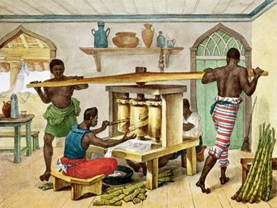
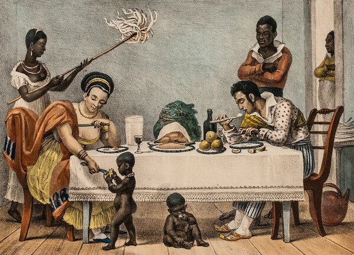

A produção do açúcar

O comércio de açúcar foi uma das principais bases ecônomicas coloniais, isso entre meados dos séculos XVI e XVIII. Sua implementação ocorreu por meio da importação pelos portugueses do sistema de sesmarias, responsável pela distribuição de terras para produção agrícola na, então, colônia portuguesa. Esse processo foi fundamental para a ocupação territorial, que, aos poucos, formou boa parte do que hoje representa a geografia atual do Brasil.
A partir da cana-de-açúcar o açúcar comum é resultado de um processo de transformação que foi desenvolvido por volta do século VI a.C. Seu acesso ao povo europeu foi causa das Cruzadas, descoberta que tornou a iguaria muito apreciada. Por volta do século XII, a então República de Veneza passou a dominar seu processo de produção e abastecer a Europa.
Portugal passou a desenvolver a produção de açúcar em maior escala a partir de meados do século XV, nos territórios da Ilha da Madeira, Açores e Cabo Verde, todas falhando por problemas diversos. Os portugueses já possuiam experiência em técnicas de produção mesmo antes de chegar às colônias, essa experiência não se limitando apenas à produção de açúcar, mas também ao uso de mão de obra escrava.
| Como se relaciona com a escravidão | Como se relaciona com o engenho | Como se relaciona com a mandioca |
|  |  |
 |
| Escravos eram utilizados na produção e comércio de açúcar | O açúcar era produzido nos engenhos, operados principalmente por escravos | Os escravos que trabalhavam nos engenhos eram alimentando mandioca |
| Leia mais | Leia mais | Leia mais |